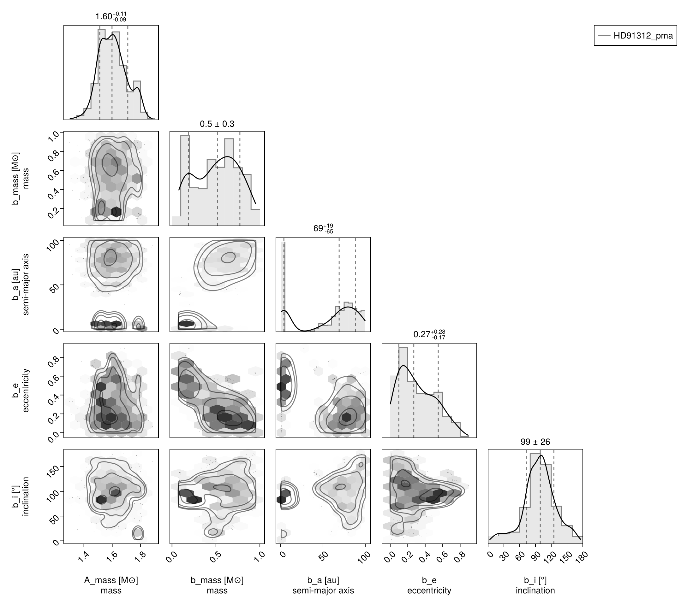
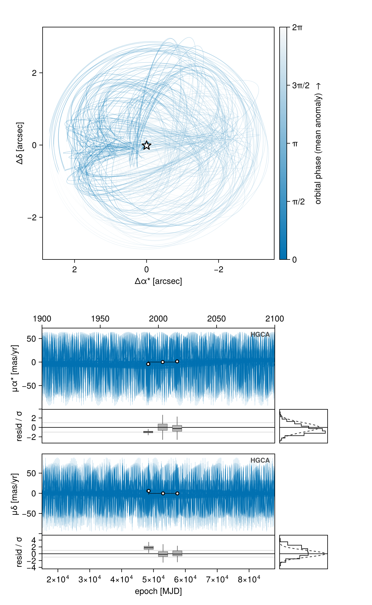
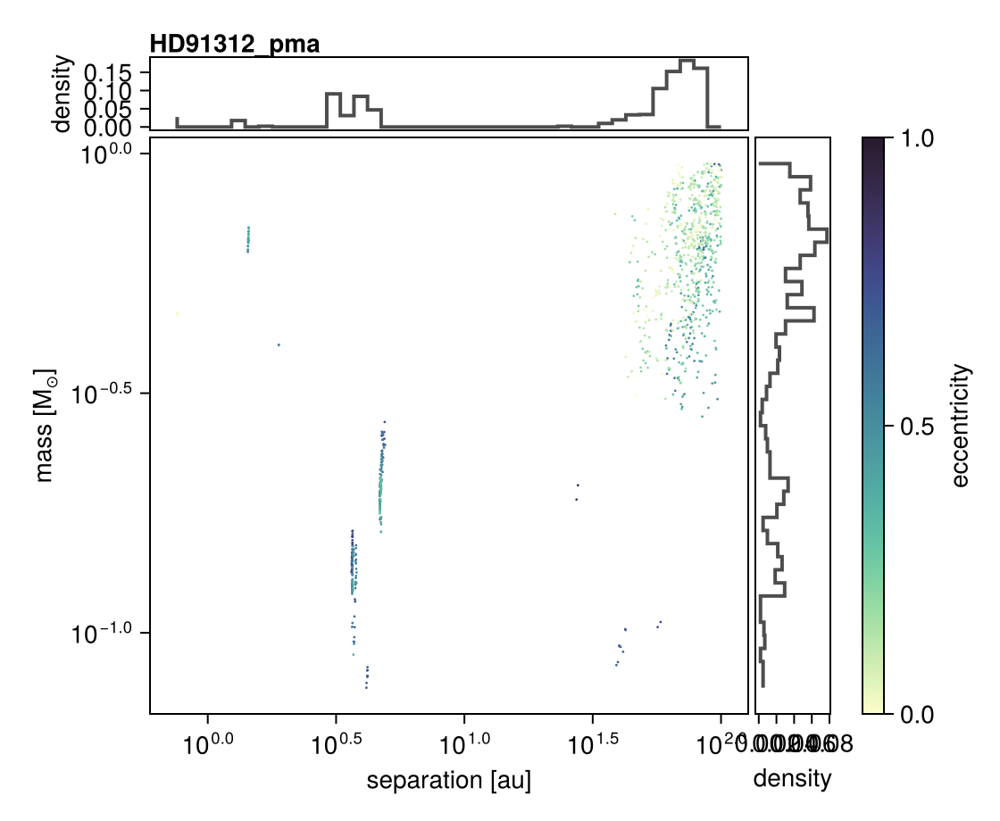
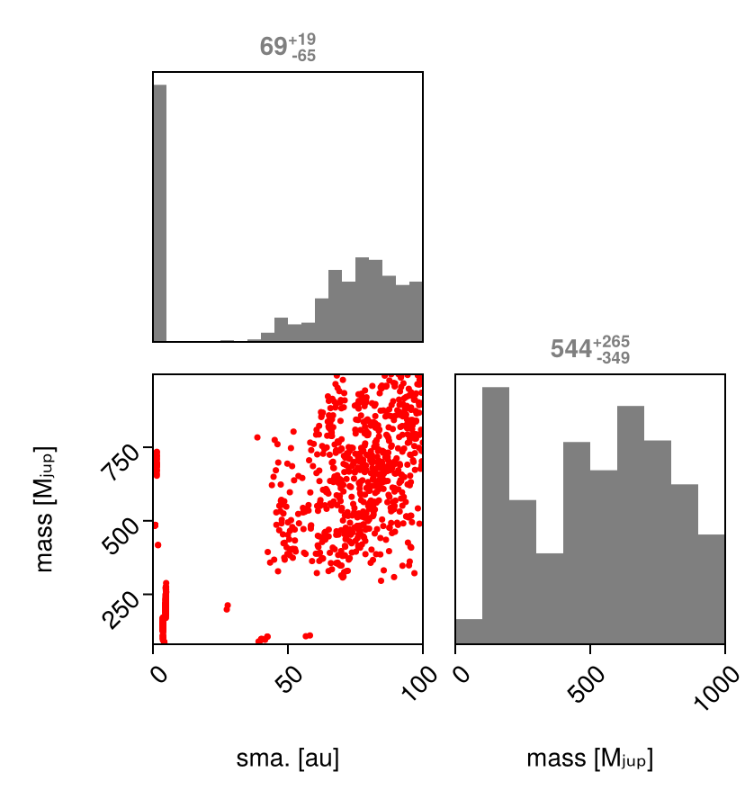

Fit Proper Motion Anomaly
Octofitter.jl supports fitting orbit models to astrometric motion in the form of GAIA-Hipparcos proper motion anomaly (HGCA; https://arxiv.org/abs/2105.11662). These data points are calculated by finding the difference between a long term proper motion of a star between the Hipparcos and GAIA catalogs, and their proper motion calculated within the windows of each catalog. This gives four data points that can constrain the dynamical mass & orbits of planetary companions (assuming we subtract out the net trend).
If your star of interest is in the HGCA, all you need is it's GAIA DR3 ID number. You can find this number by searching for your target on SIMBAD.
For this tutorial, we will examine the star and companion HD 91312 A & B discovered by SCExAO. We will use their published astrometry and proper motion anomaly extracted from the HGCA.
The first step is to find the GAIA source ID for your object. For HD 91312, SIMBAD tells us the GAIA DR3 ID is 756291174721509376.
HGCAObs is a helper over G23HObs
HGCAObs is a constructor that builds a G23HObs restricted to the six channels the HGCA constrains:
HGCAObs(; gaia_id, host, companions=(), ref=Barycentre, kwargs...) =
G23HObs(; gaia_id, host, companions, ref,
channels = (:ra_hip, :dec_hip, :ra_hg, :dec_hg, :ra_dr3, :dec_dr3),
ueva_mode = :none,
include_iad = false,
include_rv = false,
kwargs...)The object you get back is a G23HObs, so everything G23HObs documents applies: source membership through host/companions, flux ratios defaulting to the bodies' own flux_G / flux_Hp, variables=, the offline catalog= / forecast_table= / hipparcos= inputs, and likeobj_from_epoch_subset / generate_from_params / cross-validation.
ueva_mode is a three-valued symbol (:RUWE / :EAN / :none), not a boolean; :none drops both the :ueva_dr3 datum and the UEVA-driven deflation of the DR3 covariance, because the HGCA has no excess-noise channel. The DR2 and DR3−DR2 channels are dropped too: the HGCA is Hipparcos + Hipparcos–Gaia + DR3. Reach for G23HObs directly if you want the extra channels.
The Gaia and Hipparcos epoch selections are sampled parameters by default, which is what lets the model account for transits the catalogs matched but the scan-law forecast cannot pin down. Passing freeze_epochs=true fixes that selection and makes fitting dramatically faster, at the cost of an approximation. It is the right setting for exploring a model and the wrong one for a published fit.
Fitting Astrometric Motion Only
Initial setup:
using Octofitter, Distributions, RandomWe begin by finding orbits that are consistent with the astrometric motion. Later, we will add in relative astrometry to the fit from direct imaging to further constrain the planet's orbit and mass — see Astrometry, PMA, and RV.
Compared to previous tutorials, we now add a prior on the mass of the companion, called mass. Every mass is in solar masses; mjup is a plain multiplicative constant, so a Jupiter-mass prior is written LogUniform(0.5mjup, 1000mjup).
For this model we also want to place a prior on the host star mass rather than the system total mass. There is nothing to do: each body carries its own mass, and the total mass of an orbit comes from the hierarchy.
The bodies
A = Body(
name="A",
variables=@variables begin
mass ~ truncated(Normal(1.61, 0.1), lower=0.1) # Msol
flux_G = 1.0 # the host sets the contrast scale in each band
flux_Hp = 1.0
end
)
planet_b = Body(
name="b",
about=A,
variables=@variables begin
mass ~ LogUniform(0.5mjup, 1000mjup) # Msol
a ~ LogUniform(0.1, 100.0) # au
e ~ Uniform(0, 0.9)
ω ~ Uniform(0, 2pi)
i ~ Sine() # the Sine() distribution is defined by Octofitter
Ω ~ Uniform(0, 2pi)
tp ~ Uniform(50000, 60000) # time of periastron [MJD]
flux_G = 0.0 # dark to Gaia…
flux_Hp = 0.0 # …and to Hipparcos
end
)flux_G and flux_Hp are the contrast ratios against the host (hence flux_G = 1.0 on A), and they are what the model uses to place the Gaia photocentre and to modulate the Hipparcos abscissa. A luminous, unresolved companion gets a real prior here — flux_G ~ Uniform(0, 1). Omitting all four lines is also legal and means the same thing as 0.0: no fluxes anywhere leaves every companion dark.
Retrieving the HGCA
hgca_obs = HGCAObs(
gaia_id = 756291174721509376,
host = A,
companions = (planet_b,),
ref = Barycentre,
freeze_epochs = true, # fast but approximate; drop for a production fit
)
hgca_obs.table.kind6-element Vector{Symbol}:
:ra_hip
:dec_hip
:ra_hg
:dec_hg
:ra_dr3
:dec_dr3ref=Barycentre says that the host's reflex motion is measured against the system barycentre — which is what a catalog proper motion is. host/companions is the source membership: host is the body the catalog entry is centred on, and companions names the bodies that could blend into it.
System Model & Specifying Proper Motion Anomaly
Now that we have our bodies, we create a system model to contain them. Observations are no longer attached to a planet; they are a flat list on the system.
We specify priors on plx as usual, using the gaia_plx helper to read the parallax and uncertainty from the Gaia DR3 catalog by source ID.
We also add parameters for the star's long term proper motion. This is usually close to the long term trend between the Hipparcos and GAIA measurements.
When fitting HGCA data, use wide, uninformative priors for pmra and pmdec, such as Normal(0, 1000) (0 ± 1000 mas/yr). Do not use Gaia DR3 proper motion values as informative priors—this would double-count the information since the HGCA already incorporates Gaia astrometry and will constrain the system's proper motion through the likelihood. The pmra/pmdec parameters represent the center-of-mass proper motion, which the HGCA measurements help determine.
The example below uses a ±100 mas/yr window around the known value only because we have independent prior knowledge of this system's proper motion from other sources—for a typical analysis, you should use wide priors.
plx, ra, dec, pmra, pmdec, rv, ref_epoch are reserved system-level names for the absolute reference frame, and a partial set is rejected at model-build time — declaring pmra without pmdec, or either without ra/dec/rv/ref_epoch, is an error. Give all seven, or plx alone.
sys = System(
name="HD91312_pma",
bodies=[A, planet_b],
observations=[hgca_obs],
variables=@variables begin
plx ~ gaia_plx(gaia_id=756291174721509376)
# Priors on the center of mass proper motion
pmra ~ Uniform(-137 - 100, -137 + 100)
pmdec ~ Uniform(2 - 100, 2 + 100)
# The rest of the absolute frame
ra = $(hgca_obs.catalog.ra)
dec = $(hgca_obs.catalog.dec)
rv = 0.0 # m/s
ref_epoch = $(Octofitter.meta_gaia_DR3.ref_epoch_mjd)
end
)
model_pma = Octofitter.LogDensityModel(sys)LogDensityModel for System HD91312_pma of dimension 11 and 6 epochs with fields .ℓπcallback and .∇ℓπcallback
Sampling from the posterior (PMA only)
Because proper motion anomaly data is quite sparse, it can often produce multi-modal posteriors. If your orbit already has several relative astrometry or RV data points, this is less of an issue.
Hamiltonian Monte Carlo can only jump 2–3σ gaps between modes, and a PMA-only posterior can have modes far wider apart than that — which is why this page samples with Pigeons.jl's parallel tempering via octofit_pigeons.
Even so, a PMA-only fit is weakly constrained by construction. Prefer to add relative astrometry or RVs where you have them, as the next tutorial does.
# Modest settings so that this page builds in a few minutes; a real PMA fit
# wants the defaults (1000/1000) at least, and really wants parallel tempering.
chain_pma, pt = octofit_pigeons(model_pma, n_rounds=10)
display(chain_pma)[ Info: Sampler running with multiple threads : true
[ Info: Likelihood evaluated with multiple threads: false
[ Info: [HD91312_pma] observing_geometry = true (user)
[ Info: [HD91312_pma] barycentric_lighttime = true (user)
[ Info: [HD91312_pma] observing_geometry = true (user)
[ Info: [HD91312_pma] barycentric_lighttime = true (user)
┌ Info: Starting values not provided for all parameters! Guessing starting point using global optimization:
│ num_params = 11
└ num_fixed = 0
┌ Warning: Pathfinder error: MethodError(copy, (SplittableRandoms.SplittableRandom(0x80e1ca0fe9484bfd, 0xaabf13ae126f9159),), 0x000000000000ae22)
└ @ Octofitter ~/octo-maintenance/runner/actions-runner/_work/Octofitter.jl/Octofitter.jl/src/initialization.jl:933
┌ Warning: Using BBO result as fallback
└ @ Octofitter ~/octo-maintenance/runner/actions-runner/_work/Octofitter.jl/Octofitter.jl/src/initialization.jl:934
┌ Info: Found sample of initial positions
│ logpost_range = (-11.216636320325023, -11.216636320325023)
└ mean_logpost = -11.21663632032504
────────────────────────────────────────────────────────────────────────────────────────────────────────────────────────
scans restarts Λ Λ_var time(s) allc(B) log(Z₁/Z₀) min(α) mean(α) min(αₑ) mean(αₑ)
────────── ────────── ────────── ────────── ────────── ────────── ────────── ────────── ────────── ────────── ──────────
2 0 2.2 2.4 1.69 1.96e+09 -1.58e+04 0 0.852 1 1
4 0 4.66 6.01 1.2 3.52e+09 -2.28e+04 0 0.656 1 1
┌ Warning: Failed to construct the orbital system from these parameters
│ exception =
│ these orbits do not independently determine every body's position — the hierarchy is circular or redundant. Rows, as (exterior about interior):
│ 1: (:b,) about (:A,)
│ Stacktrace:
│ [1] error(s::String)
│ @ Base ./error.jl:44
│ [2] _err_singular(names::Tuple{Symbol, Symbol}, specs::Tuple{PlanetOrbits.RowSpec{2}})
│ @ PlanetOrbits ~/octo-maintenance/runner/actions-runner/_work/Octofitter.jl/Octofitter.jl/.planetorbits-v2/src/system.jl:287
│ [3] PlanetOrbits.System(bodyspec::Tuple{PlanetOrbits.Body{Float64, @NamedTuple{G::Float64, Hp::Float64}, :A}, PlanetOrbits.Body{Float64, @NamedTuple{G::Float64, Hp::Float64}, :b}}, orbits::Tuple{PlanetOrbits.Orbit{PlanetOrbits.Body{Float64, @NamedTuple{G::Float64, Hp::Float64}, :b}, PlanetOrbits.Body{Float64, @NamedTuple{G::Float64, Hp::Float64}, :A}, Float64}}; kwargs::@Kwargs{plx::Float64, ra::Float64, dec::Float64, pmra::Float64, pmdec::Float64, rv::Float64, ref_epoch::Float64})
│ @ PlanetOrbits ~/octo-maintenance/runner/actions-runner/_work/Octofitter.jl/Octofitter.jl/.planetorbits-v2/src/system.jl:141
│ [4] System
│ @ ~/octo-maintenance/runner/actions-runner/_work/Octofitter.jl/Octofitter.jl/.planetorbits-v2/src/system.jl:104 [inlined]
│ [5] macro expansion
│ @ ~/octo-maintenance/runner/actions-runner/_work/Octofitter.jl/Octofitter.jl/src/model/codegen.jl:592 [inlined]
│ [6] macro expansion
│ @ ~/.julia/packages/RuntimeGeneratedFunctions/odmYb/src/RuntimeGeneratedFunctions.jl:247 [inlined]
│ [7] macro expansion
│ @ ./none:0 [inlined]
│ [8] generated_callfunc
│ @ ./none:0 [inlined]
│ [9] RuntimeGeneratedFunction
│ @ ~/.julia/packages/RuntimeGeneratedFunctions/odmYb/src/RuntimeGeneratedFunctions.jl:234 [inlined]
│ [10] GeneratedLnLike
│ @ ~/octo-maintenance/runner/actions-runner/_work/Octofitter.jl/Octofitter.jl/src/model/codegen.jl:684 [inlined]
│ [11] (::Octofitter.var"#ℓπcallback#272"{System{Tuple{Body{Octofitter.Priors, Octofitter.Derived, Tuple{}}, Body{Octofitter.Priors, Octofitter.Derived, Tuple{}}}, Tuple{Octofitter.BlankLikelihood}, Tuple{}, Octofitter.Priors, Octofitter.Derived, KeplerianApprox{PlanetOrbits.Auto}}, RuntimeGeneratedFunctions.RuntimeGeneratedFunction{(:arr,), Octofitter.var"#_RGF_ModTag", Octofitter.var"#_RGF_ModTag", (0x009ed31e, 0x58c00962, 0x68448874, 0x8993279f, 0x628701dc), Expr}, RuntimeGeneratedFunctions.RuntimeGeneratedFunction{(:arr,), Octofitter.var"#_RGF_ModTag", Octofitter.var"#_RGF_ModTag", (0xd00d6338, 0x516aad32, 0x6705051e, 0xd7513f16, 0x81c5bd18), Expr}, RuntimeGeneratedFunctions.RuntimeGeneratedFunction{(:arr, :sampled), Octofitter.var"#_RGF_ModTag", Octofitter.var"#_RGF_ModTag", (0x24857beb, 0xe47f9e71, 0x26dde8a1, 0x78581a5d, 0x80fd4eda), Expr}, Octofitter.GeneratedLnLike{RuntimeGeneratedFunctions.RuntimeGeneratedFunction{(:θ,), Octofitter.var"#_RGF_ModTag", Octofitter.var"#_RGF_ModTag", (0x73a60cd1, 0xf6af7453, 0xf7730a4f, 0xa761ab66, 0x2f97b00e), Expr}, RuntimeGeneratedFunctions.RuntimeGeneratedFunction{(:system, :θ, :posys), Octofitter.var"#_RGF_ModTag", Octofitter.var"#_RGF_ModTag", (0x7f2691b3, 0x759a2b9f, 0xa0a073a3, 0x649ab9e7, 0x80848a51), Expr}}, Octofitter.var"#ℓπcallback#263#273"})(θ_transformed::Vector{Float64}, system::System{Tuple{Body{Octofitter.Priors, Octofitter.Derived, Tuple{}}, Body{Octofitter.Priors, Octofitter.Derived, Tuple{}}}, Tuple{Octofitter.BlankLikelihood}, Tuple{}, Octofitter.Priors, Octofitter.Derived, KeplerianApprox{PlanetOrbits.Auto}}, arr2nt::RuntimeGeneratedFunctions.RuntimeGeneratedFunction{(:arr,), Octofitter.var"#_RGF_ModTag", Octofitter.var"#_RGF_ModTag", (0x009ed31e, 0x58c00962, 0x68448874, 0x8993279f, 0x628701dc), Expr}, Bijector_invlinkvec::RuntimeGeneratedFunctions.RuntimeGeneratedFunction{(:arr,), Octofitter.var"#_RGF_ModTag", Octofitter.var"#_RGF_ModTag", (0xd00d6338, 0x516aad32, 0x6705051e, 0xd7513f16, 0x81c5bd18), Expr}, ln_prior_transformed::RuntimeGeneratedFunctions.RuntimeGeneratedFunction{(:arr, :sampled), Octofitter.var"#_RGF_ModTag", Octofitter.var"#_RGF_ModTag", (0x24857beb, 0xe47f9e71, 0x26dde8a1, 0x78581a5d, 0x80fd4eda), Expr}, ln_like_generated::Octofitter.GeneratedLnLike{RuntimeGeneratedFunctions.RuntimeGeneratedFunction{(:θ,), Octofitter.var"#_RGF_ModTag", Octofitter.var"#_RGF_ModTag", (0x73a60cd1, 0xf6af7453, 0xf7730a4f, 0xa761ab66, 0x2f97b00e), Expr}, RuntimeGeneratedFunctions.RuntimeGeneratedFunction{(:system, :θ, :posys), Octofitter.var"#_RGF_ModTag", Octofitter.var"#_RGF_ModTag", (0x7f2691b3, 0x759a2b9f, 0xa0a073a3, 0x649ab9e7, 0x80848a51), Expr}}; sampled::Bool)
│ @ Octofitter ~/octo-maintenance/runner/actions-runner/_work/Octofitter.jl/Octofitter.jl/src/logdensitymodel.jl:312
│ [12] ℓπcallback (repeats 6 times)
│ @ ~/octo-maintenance/runner/actions-runner/_work/Octofitter.jl/Octofitter.jl/src/logdensitymodel.jl:288 [inlined]
│ [13] LogDensityModel
│ @ ~/octo-maintenance/runner/actions-runner/_work/Octofitter.jl/Octofitter.jl/ext/OctofitterPigeonsExt.jl:23 [inlined]
│ [14] InterpolatedLogPotential
│ @ ~/.julia/packages/Pigeons/y3Kae/src/paths/InterpolatedLogPotential.jl:16 [inlined]
│ [15] slice_double(h::Pigeons.SliceSampler, replica::Pigeons.Replica{Vector{Float64}, @NamedTuple{explorer_acceptance_pr::OnlineStatsBase.GroupBy{Int64, Number, OnlineStatsBase.Mean{Float64, OnlineStatsBase.EqualWeight}}, explorer_n_steps::OnlineStatsBase.GroupBy{Int64, Number, OnlineStatsBase.Sum{Float64}}, swap_acceptance_pr::OnlineStatsBase.GroupBy{Tuple{Int64, Int64}, Number, OnlineStatsBase.Mean{Float64, OnlineStatsBase.EqualWeight}}, log_sum_ratio::OnlineStatsBase.GroupBy{Tuple{Int64, Int64}, Number, Pigeons.LogSum{Float64}}, traces::Dict{Pair{Int64, Int64}, Any}, round_trip::Pigeons.RoundTripRecorder, timing_extrema::NonReproducible{...}, allocation_extrema::NonReproducible{...}, index_process::Dict{Int64, Vector{Int64}}, _transformed_online::Pigeons.OnlineStateRecorder}}, z::Float64, pointer::Base.RefArray{Float64, Vector{Float64}, Nothing}, log_potential::InterpolatedLogPotential{...})
│ @ Pigeons ~/.julia/packages/Pigeons/y3Kae/src/explorers/SliceSampler.jl:118
│ [16] slice_sample_coord!
│ @ ~/.julia/packages/Pigeons/y3Kae/src/explorers/SliceSampler.jl:92 [inlined]
│ [17] slice_sample!(h::Pigeons.SliceSampler, state::Vector{Float64}, log_potential::InterpolatedLogPotential{...}, cached_lp::Float64, replica::Pigeons.Replica{Vector{Float64}, @NamedTuple{explorer_acceptance_pr::OnlineStatsBase.GroupBy{Int64, Number, OnlineStatsBase.Mean{Float64, OnlineStatsBase.EqualWeight}}, explorer_n_steps::OnlineStatsBase.GroupBy{Int64, Number, OnlineStatsBase.Sum{Float64}}, swap_acceptance_pr::OnlineStatsBase.GroupBy{Tuple{Int64, Int64}, Number, OnlineStatsBase.Mean{Float64, OnlineStatsBase.EqualWeight}}, log_sum_ratio::OnlineStatsBase.GroupBy{Tuple{Int64, Int64}, Number, Pigeons.LogSum{Float64}}, traces::Dict{Pair{Int64, Int64}, Any}, round_trip::Pigeons.RoundTripRecorder, timing_extrema::NonReproducible{...}, allocation_extrema::NonReproducible{...}, index_process::Dict{Int64, Vector{Int64}}, _transformed_online::Pigeons.OnlineStateRecorder}})
│ @ Pigeons ~/.julia/packages/Pigeons/y3Kae/src/explorers/SliceSampler.jl:49
│ [18] step!(explorer::Pigeons.SliceSampler, replica::Pigeons.Replica{Vector{Float64}, @NamedTuple{explorer_acceptance_pr::OnlineStatsBase.GroupBy{Int64, Number, OnlineStatsBase.Mean{Float64, OnlineStatsBase.EqualWeight}}, explorer_n_steps::OnlineStatsBase.GroupBy{Int64, Number, OnlineStatsBase.Sum{Float64}}, swap_acceptance_pr::OnlineStatsBase.GroupBy{Tuple{Int64, Int64}, Number, OnlineStatsBase.Mean{Float64, OnlineStatsBase.EqualWeight}}, log_sum_ratio::OnlineStatsBase.GroupBy{Tuple{Int64, Int64}, Number, Pigeons.LogSum{Float64}}, traces::Dict{Pair{Int64, Int64}, Any}, round_trip::Pigeons.RoundTripRecorder, timing_extrema::NonReproducible{...}, allocation_extrema::NonReproducible{...}, index_process::Dict{Int64, Vector{Int64}}, _transformed_online::Pigeons.OnlineStateRecorder}}, shared::Shared{...})
│ @ Pigeons ~/.julia/packages/Pigeons/y3Kae/src/explorers/SliceSampler.jl:28
│ [19] explore!(pt::PT{...}, replica::Pigeons.Replica{Vector{Float64}, @NamedTuple{explorer_acceptance_pr::OnlineStatsBase.GroupBy{Int64, Number, OnlineStatsBase.Mean{Float64, OnlineStatsBase.EqualWeight}}, explorer_n_steps::OnlineStatsBase.GroupBy{Int64, Number, OnlineStatsBase.Sum{Float64}}, swap_acceptance_pr::OnlineStatsBase.GroupBy{Tuple{Int64, Int64}, Number, OnlineStatsBase.Mean{Float64, OnlineStatsBase.EqualWeight}}, log_sum_ratio::OnlineStatsBase.GroupBy{Tuple{Int64, Int64}, Number, Pigeons.LogSum{Float64}}, traces::Dict{Pair{Int64, Int64}, Any}, round_trip::Pigeons.RoundTripRecorder, timing_extrema::NonReproducible{...}, allocation_extrema::NonReproducible{...}, index_process::Dict{Int64, Vector{Int64}}, _transformed_online::Pigeons.OnlineStateRecorder}}, explorer::Pigeons.SliceSampler)
│ @ Pigeons ~/.julia/packages/Pigeons/y3Kae/src/pt/pigeons.jl:107
│ [20] macro expansion
│ @ ~/.julia/packages/Pigeons/y3Kae/src/pt/pigeons.jl:84 [inlined]
│ [21] (::Pigeons.var"#explore!##0#explore!##1"{Pigeons.var"#explore!##2#explore!##3"{PT{...}, Pigeons.SliceSampler, Vector{Pigeons.Replica{Vector{Float64}, @NamedTuple{explorer_acceptance_pr::OnlineStatsBase.GroupBy{Int64, Number, OnlineStatsBase.Mean{Float64, OnlineStatsBase.EqualWeight}}, explorer_n_steps::OnlineStatsBase.GroupBy{Int64, Number, OnlineStatsBase.Sum{Float64}}, swap_acceptance_pr::OnlineStatsBase.GroupBy{Tuple{Int64, Int64}, Number, OnlineStatsBase.Mean{Float64, OnlineStatsBase.EqualWeight}}, log_sum_ratio::OnlineStatsBase.GroupBy{Tuple{Int64, Int64}, Number, Pigeons.LogSum{Float64}}, traces::Dict{Pair{Int64, Int64}, Any}, round_trip::Pigeons.RoundTripRecorder, timing_extrema::NonReproducible{...}, allocation_extrema::NonReproducible{...}, index_process::Dict{Int64, Vector{Int64}}, _transformed_online::Pigeons.OnlineStateRecorder}}}}})(tid::Int64; onethread::Bool)
│ @ Pigeons ./threadingconstructs.jl:279
│ [22] #explore!##0
│ @ ./threadingconstructs.jl:246 [inlined]
│ [23] (::Base.Threads.var"#threading_run##0#threading_run##1"{Pigeons.var"#explore!##0#explore!##1"{Pigeons.var"#explore!##2#explore!##3"{PT{...}, Pigeons.SliceSampler, Vector{Pigeons.Replica{Vector{Float64}, @NamedTuple{explorer_acceptance_pr::OnlineStatsBase.GroupBy{Int64, Number, OnlineStatsBase.Mean{Float64, OnlineStatsBase.EqualWeight}}, explorer_n_steps::OnlineStatsBase.GroupBy{Int64, Number, OnlineStatsBase.Sum{Float64}}, swap_acceptance_pr::OnlineStatsBase.GroupBy{Tuple{Int64, Int64}, Number, OnlineStatsBase.Mean{Float64, OnlineStatsBase.EqualWeight}}, log_sum_ratio::OnlineStatsBase.GroupBy{Tuple{Int64, Int64}, Number, Pigeons.LogSum{Float64}}, traces::Dict{Pair{Int64, Int64}, Any}, round_trip::Pigeons.RoundTripRecorder, timing_extrema::NonReproducible{...}, allocation_extrema::NonReproducible{...}, index_process::Dict{Int64, Vector{Int64}}, _transformed_online::Pigeons.OnlineStateRecorder}}}}}, Int64})()
│ @ Base.Threads ./threadingconstructs.jl:178
└ @ Octofitter ~/octo-maintenance/runner/actions-runner/_work/Octofitter.jl/Octofitter.jl/src/model/codegen.jl:687
8 0 6.01 5.09 2.25 6.39e+09 -1.02e+03 0 0.642 1 1
16 0 6.25 6.69 4.58 1.25e+10 -118 2.12e-170 0.583 0.998 1
32 0 7.3 6.37 8.85 2.39e+10 -114 8.1e-87 0.559 0.998 1
64 1 7.78 4.97 20.1 4.91e+10 -29.4 4.31e-06 0.589 1 1
128 2 8.02 4.89 37.6 9.58e+10 -28.1 0.0471 0.584 1 1
256 10 8.71 5 74.7 1.88e+11 -28.2 0.0627 0.558 1 1
512 22 9.23 5.34 147 3.73e+11 -26.1 0.211 0.53 1 1
1.02e+03 42 9.18 5.94 282 7.54e+11 -25.9 0.341 0.512 1 1
────────────────────────────────────────────────────────────────────────────────────────────────────────────────────────Analysis
The first step is to look at the table output above generated by MCMCChains.jl. The rhat column gives a convergence measure. Each parameter should have an rhat very close to 1.000. If not, you may need to run the model for more iterations or tweak the parameterization of the model to improve sampling. The ess column gives an estimate of the effective sample size. The mean and std columns give the mean and standard deviation of each parameter.
The second table summarizes the 2.5, 25, 50, 75, and 97.5 percentiles of each parameter in the model.
Pair Plot
If we wish to examine the covariance between parameters in more detail, we can construct a pair-plot (aka. corner plot).
# Create a corner plot / pair plot.
# We can access any property from the chain specified in Variables
using CairoMakie: Makie
using PairPlots
octocorner(model_pma, chain_pma, small=true)
Proper Motion Panels
G23HObs declares pmra and pmdec plot channels, so octoplot draws the five catalog proper motions — Hipparcos, Hipparcos–Gaia, DR2, DR3−DR2 and DR3 — against the model's reflex proper-motion curve, with a residual strip below each:
octoplot(model_pma, chain_pma)
The horizontal bar on each point is its averaging window, not an uncertainty: a catalog proper motion is a mean over a mission span, which is why a Hipparcos point can sit far from a curve the Gaia points hug.
Posterior Mass vs. Semi-Major Axis
Given that this posterior is quite unconstrained, it is useful to make a simplified plot marginalizing over all orbital parameters besides separation. dotplot is that summary — mass against separation (or period, with mode=:period), coloured by eccentricity, with marginal histograms:
Octofitter.dotplot(model_pma, chain_pma)
Masses are in solar masses throughout. For a fully custom version, PairPlots.pairplot over the chain columns works too:
using PairPlots
pairplot(
(; a = chain_pma["b_a"][:], mass = chain_pma["b_mass"][:] ./ mjup) => (
PairPlots.Scatter(color=:red, markersize=5),
PairPlots.MarginHist(),
PairPlots.MarginQuantileText(),
),
labels = Dict(:a => "sma. [au]", :mass => "mass [Mⱼᵤₚ]"),
)
See Also
- Astrometry, PMA, and RV — the same target with relative astrometry and radial velocities added, plus a model comparison across data subsets.
- Joint Gaia-Hipparcos (G23H) — the full channel set this page restricts.
- Hipparcos IAD — the Hipparcos abscissae on their own.